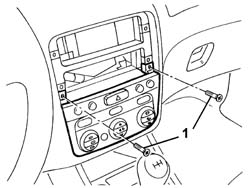
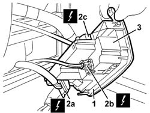
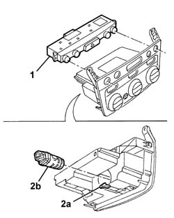

5040D15 CONTROL UNIT WITH AUTOMATIC DUEL ZONE AIR CONDITIONER KNOBS AND BUTTONS R R
- Path
- Procedures > 50 AUXILIARY UNITS > 5040 AIR CONDITIONING CASING AND COMPONENTS > 5040D AIR CONDITIONER CONTROLS > 5040D15 CONTROL UNIT WITH AUTOMATIC DUEL ZONE AIR CONDITIONER KNOBS AND BUTTONS R R
- Kind
- repair procedure (removal / refitting; the operation number is the code)
- Applies to
- engines: 2.0 JTS, 3.2 V6, 1.9 JTD 16V; all production periods
- Interactive page
- https://sloeber94.github.io/elrnDB-aGt/en/#/125001548
Applies to: engines: 2.0 JTS, 3.2 V6, 1.9 JTD 16V; all production periods
 Removing
Removing
 Refitting
RefittingOp. 7040A80 COMPARTMENT UNIT ON FACIA R R
Op. 5570T80 CAR RADIO UNIT - R+R
1. Undo the bolts.

Applies to: engines: 2.0 JTS, 3.2 V6, 1.9 JTD 16V; all production periods
1. Move the control unit and switches slightly.
2. Disconnect the electrical connections (2a, 2b, 2c).
Name | Connector | |
|---|---|---|
2a | Climate control system control unit | See M70 CLIMATE CONTROL SYSTEM CONTROL UNIT |
Name | Connector | |
|---|---|---|
2b | Passenger compartment air temperature sensor | See K89 PASSENGER COMPARTMENT AIR TEMPERATURE SENSOR ( CONNECTORS ) |
Name | Connector | |
|---|---|---|
2c | Hazard warning lights fog lights rear fog lamps control | See H12A HAZARD WARNING LIGHTS FOG LIGHTS REAR FOG LAMPS CONTROL ( FACIA ) |
3. Recover the control unit and switches.

Applies to: engines: 2.0 JTS, 3.2 V6, 1.9 JTD 16V; all production periods
1. At the bench, release the switch unit.
2. If necessary, lift up the retainer (2a) and extract the internal temperature sensor and fan (2b).
3. Recover the air conditioning control unit.

Applies to: engines: 2.0 JTS, 3.2 V6, 1.9 JTD 16V; all production periods
Refitting
RemovingCheck that the control unit is undamaged.
If removed, fit the internal temperature sensor and fan in position and attach it to the retainer.
Fit the switch unit in its seating.
Connect the electrical connections .
Fit the control unit and switches in position.
Tighten the bolts.
Op. 5570T80 CAR RADIO UNIT - R+R
Op. 7040A12 REMOVABLE BOX ON FACIA - ARRANGE
Carry out the climate control control unit coding procedure (
Characteristic of working principle 5040 AIR CONDITIONING CASING AND COMPONENTS
).
Topics linked from this page (4)
- 5040 AIR CONDITIONING CASING AND COMPONENTS
- 5570T80 CAR RADIO UNIT - R+R
- 7040A12 REMOVABLE BOX ON FACIA - ARRANGE
- 7040A80 COMPARTMENT UNIT ON FACIA R R